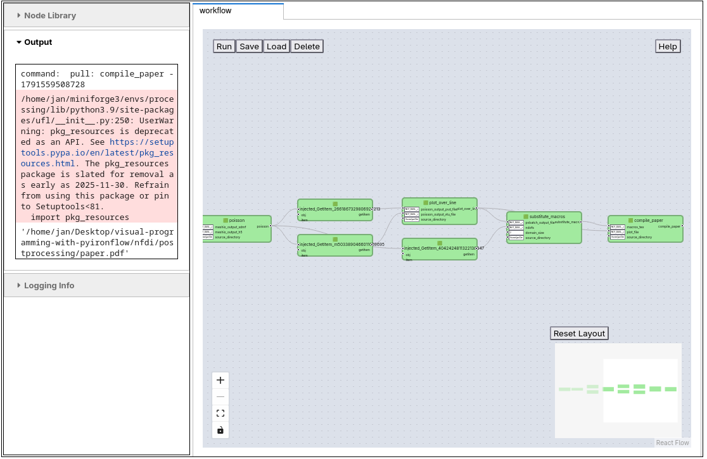
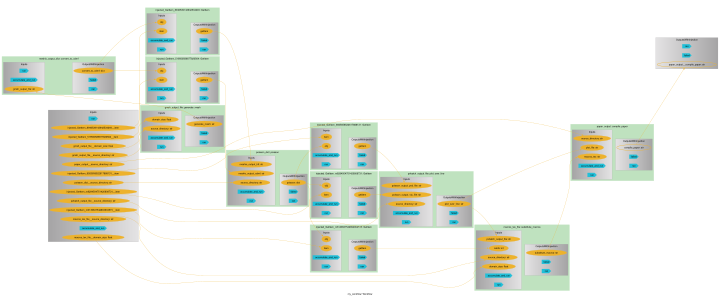

NFDI4Ing#
BAMresearch/NFDI4IngScientificWorkflowRequirements
The NFDI4Ing scientific workflow requirements define a benchmark for workflow management systems. It is a typical file-based simulation workflow in computational engineering: it starts from a geometry, solves a partial differential equation with the finite element method, post-processes the solution and finally compiles a short paper that contains the results. Each step calls an external command line tool, and the steps exchange data through files.
The workflow consists of six Python functions, defined in workflow.py:
Step |
Function |
Tool |
Main input |
Main output |
|---|---|---|---|---|
1 |
|
|
mesh |
|
2 |
|
|
|
|
3 |
|
FEniCS ( |
mesh in XDMF format |
solution |
4 |
|
ParaView |
solution files |
|
5 |
|
Python ( |
|
LaTeX macros |
6 |
|
|
|
The physics is the Poisson equation on a square domain with edge length domain_size, with Dirichlet boundary conditions \(u = 1 + x^2 + 2y^2\). The solution is evaluated along the diagonal of the square, and the resulting curve is included as a plot in the final paper.pdf.
The input templates and scripts for the individual steps are stored in the source directory. The tools have conflicting dependencies, so each stage runs in its own conda environment: preprocessing, processing and postprocessing, defined in source/envs/. The Python functions call the tools with check_output() from conda_subprocess. It works like subprocess.check_output() but runs the command inside the conda environment named by prefix_name. Each function copies its input files into a working directory named after its stage and returns the absolute paths of the files it creates. These paths are the data passed along the edges of the workflow.
This example shows that the Python Workflow Definition is not limited to Python-native data. File-based workflows that chain external simulation codes are described the same way. The same workflow is implemented with other workflow engines in the Python Workflow Definition repository.
The notebook first reloads the existing workflow.json in pyironflow and runs it. It then shows how the workflow is defined with pyiron_workflow and exported to workflow.json.
Reload workflow in pyironflow#
load_workflow_json() reads workflow.json, imports the six functions from workflow.py and connects them into a pyiron_workflow Workflow. The workflow is then shown in the pyironflow graphical user interface.
The source_directory input in workflow.json is an absolute path on the computer where the file was exported. To run the workflow on another computer, regenerate workflow.json with the second part of this notebook, which sets source_directory to the local source directory.
workflow_json_filename = "workflow.json"
from python_workflow_definition.pyiron_workflow import load_workflow_json
from pyironflow import PyironFlow
wf = load_workflow_json(file_name=workflow_json_filename)
PyironFlow([wf]).gui
The pyironflow interface is an interactive Jupyter widget, so it only appears in a live Jupyter session. The screenshot below shows the NFDI4Ing workflow in pyironflow after it has been executed:

The user interface of pyironflow is split into two parts:
Sidebar (left):
Node Library lists Python functions that can be added to the workflow as new nodes.
Output shows the result of the most recent execution, including anything the Python functions print to
stdoutorstderr.Logging Info collects log messages of the workflow engine.
Canvas (right): each workflow is shown in its own tab. The buttons in the top left are Run (execute the whole workflow), Save and Load (write the workflow, including its results, to storage and read it back) and Delete (remove the saved copy from storage). The controls in the bottom left zoom and fit the view. The Reset Layout button arranges the nodes automatically, and the minimap below it helps you find your way around larger graphs.
Each green box is a node, which is one Python function. Its input ports are on the left and its output ports on the right. Input values that do not come from another node can be edited in the fields next to the input ports. The lines between nodes are the edges of the workflow and show how data flows from one function to the next.
Besides running the whole workflow, you can work with individual nodes:
Pull runs a node together with all upstream nodes it depends on.
Push runs a node and all downstream nodes that depend on it.
Reset clears the cached results of a node.
The right-click menu offers View Output, which shows a node’s outputs without running it, and View Source, which shows the Python source code behind the node.
These options make it easy to inspect intermediate results while debugging a workflow.
The screenshot shows the second half of the NFDI4Ing workflow. The poisson node returns a dictionary, and injected_GetItem nodes extract the individual entries (numdofs, pvd_file and vtu_file). These entries flow into plot_over_line and substitute_macros, which then feed compile_paper. Further to the left, outside the visible area but shown in the minimap, are generate_mesh and convert_to_xdmf. The input fields on the left side of each node show the values of domain_size and source_directory. These inputs are shared by several nodes.
The Output panel shows the result of pulling the final compile_paper node: the path to the generated paper.pdf. The red box above it is a deprecation warning that the FEniCS installation in the processing environment prints to stderr. Showing these messages directly in the interface helps when debugging workflows that call external codes.
wf.run()
/home/jan/miniforge3/envs/processing/lib/python3.9/site-packages/ufl/__init__.py:250: UserWarning: pkg_resources is deprecated as an API. See https://setuptools.pypa.io/en/latest/pkg_resources.html. The pkg_resources package is slated for removal as early as 2025-11-30. Refrain from using this package or pin to Setuptools<81.
import pkg_resources
{'compile_paper__compile_paper': '/home/jan/Desktop/visual-programming-with-pyironflow/nfdi/postprocessing/paper.pdf'}
wf.run() runs the same workflow from Python. It goes through all six steps and returns the absolute path to the compiled paper.pdf in the postprocessing directory. The intermediate files are kept in the preprocessing, processing and postprocessing working directories next to this notebook.
Define workflow with pyironflow#
This part shows how workflow.json was created. pyironflow is a graphical front end for pyiron_workflow, so the workflow is defined with the pyiron_workflow Python interface. The steps are:
Wrap each Python function from
workflow.pyinto a node class withto_function_node(). The function is imported under a name with a leading underscore, so that the node class can use the plain name.Create a
Workflowand add the nodes by assigning them as attributes of the workflow, for examplewf.gmsh_output_file = generate_mesh(...).Connect the nodes by passing the output of one node as the input of the next.
Export the workflow graph to the Python Workflow Definition with
write_workflow_json().
import os
from workflow import (
generate_mesh as _generate_mesh,
convert_to_xdmf as _convert_to_xdmf,
poisson as _poisson,
plot_over_line as _plot_over_line,
substitute_macros as _substitute_macros,
compile_paper as _compile_paper,
)
from pyiron_workflow import Workflow, to_function_node
from python_workflow_definition.pyiron_workflow import write_workflow_json
generate_mesh = to_function_node("generate_mesh", _generate_mesh, "generate_mesh")
convert_to_xdmf = to_function_node("convert_to_xdmf", _convert_to_xdmf, "convert_to_xdmf")
poisson = to_function_node("poisson", _poisson, "poisson")
plot_over_line = to_function_node("plot_over_line", _plot_over_line, "plot_over_line")
substitute_macros = to_function_node("substitute_macros", _substitute_macros, "substitute_macros")
compile_paper = to_function_node("compile_paper", _compile_paper, "compile_paper")
wf = Workflow("my_workflow")
The workflow has two inputs:
domain_size: the edge length of the square domain. It is used by gmsh to generate the mesh, and it is written into the paper.source_directory: the absolute path of thesourcedirectory, which holds the templates and scripts for the individual steps. Every step exceptconvert_to_xdmfcopies its files from this directory.
wf.domain_size = 2.0
wf.source_directory = os.path.abspath(os.path.join(os.curdir, "source"))
Step 1: mesh generation. generate_mesh copies unit_square.geo into the preprocessing directory and runs gmsh in the preprocessing conda environment. It returns the path of the 2D mesh square.msh.
wf.gmsh_output_file = generate_mesh(
domain_size=wf.domain_size,
source_directory=wf.source_directory,
)
Step 2: mesh conversion. convert_to_xdmf converts the gmsh mesh with meshio into the XDMF format that FEniCS can read. It returns a dictionary with the paths of the xdmf_file and the accompanying h5_file.
wf.meshio_output_dict = convert_to_xdmf(
gmsh_output_file=wf.gmsh_output_file,
)
Step 3: finite element simulation. poisson solves the Poisson equation with FEniCS in the processing conda environment. The two entries of the dictionary returned by the previous step are selected with wf.meshio_output_dict["xdmf_file"] and wf.meshio_output_dict["h5_file"]. The function returns a dictionary with the solution files (pvd_file, vtu_file) and the number of degrees of freedom (numdofs).
wf.poisson_dict = poisson(
meshio_output_xdmf=wf.meshio_output_dict["xdmf_file"],
meshio_output_h5=wf.meshio_output_dict["h5_file"],
source_directory=wf.source_directory,
)
Step 4: post-processing. plot_over_line uses ParaView’s pvbatch in the postprocessing conda environment to sample the solution along the diagonal of the domain. It stores the result in plotoverline.csv.
wf.pvbatch_output_file = plot_over_line(
poisson_output_pvd_file=wf.poisson_dict["pvd_file"],
poisson_output_vtu_file=wf.poisson_dict["vtu_file"],
source_directory=wf.source_directory,
)
Step 5: prepare the paper. substitute_macros fills the template macros.tex.template with the domain size, the number of degrees of freedom from the simulation, and the path to the CSV file. This node collects results from several earlier steps, so the workflow is a directed acyclic graph rather than a simple chain.
wf.macros_tex_file = substitute_macros(
pvbatch_output_file=wf.pvbatch_output_file,
ndofs=wf.poisson_dict["numdofs"],
domain_size=wf.domain_size,
source_directory=wf.source_directory,
)
Step 6: compile the paper. compile_paper compiles paper.tex with tectonic, using the generated macros.tex and the plot data, and returns the path of paper.pdf. This is the final output of the workflow.
wf.paper_output = compile_paper(
macros_tex=wf.macros_tex_file,
plot_file=wf.pvbatch_output_file,
source_directory=wf.source_directory,
)
wf.draw() renders the assembled node graph, and write_workflow_json() exports it, via wf.graph_as_dict, to the PWD workflow.json format.
wf.draw(size=(10,10))

write_workflow_json(graph_as_dict=wf.graph_as_dict, file_name=workflow_json_filename)
!cat {workflow_json_filename}
{
"version": "0.1.0",
"nodes": [
{
"id": 0,
"type": "function",
"value": "workflow.generate_mesh"
},
{
"id": 1,
"type": "function",
"value": "workflow.convert_to_xdmf"
},
{
"id": 2,
"type": "function",
"value": "workflow.poisson"
},
{
"id": 3,
"type": "function",
"value": "workflow.plot_over_line"
},
{
"id": 4,
"type": "function",
"value": "workflow.substitute_macros"
},
{
"id": 5,
"type": "function",
"value": "workflow.compile_paper"
},
{
"id": 6,
"type": "input",
"name": "domain_size",
"value": 2.0
},
{
"id": 7,
"type": "input",
"name": "source_directory",
"value": "/home/jan/Desktop/visual-programming-with-pyironflow/nfdi/source"
},
{
"id": 8,
"type": "output",
"name": "result"
}
],
"edges": [
{
"target": 2,
"targetPort": "meshio_output_h5",
"source": 1,
"sourcePort": "h5_file"
},
{
"target": 2,
"targetPort": "meshio_output_xdmf",
"source": 1,
"sourcePort": "xdmf_file"
},
{
"target": 4,
"targetPort": "ndofs",
"source": 2,
"sourcePort": "numdofs"
},
{
"target": 3,
"targetPort": "poisson_output_vtu_file",
"source": 2,
"sourcePort": "vtu_file"
},
{
"target": 3,
"targetPort": "poisson_output_pvd_file",
"source": 2,
"sourcePort": "pvd_file"
},
{
"target": 1,
"targetPort": "gmsh_output_file",
"source": 0,
"sourcePort": null
},
{
"target": 5,
"targetPort": "plot_file",
"source": 3,
"sourcePort": null
},
{
"target": 4,
"targetPort": "pvbatch_output_file",
"source": 3,
"sourcePort": null
},
{
"target": 5,
"targetPort": "macros_tex",
"source": 4,
"sourcePort": null
},
{
"target": 0,
"targetPort": "domain_size",
"source": 6,
"sourcePort": null
},
{
"target": 0,
"targetPort": "source_directory",
"source": 7,
"sourcePort": null
},
{
"target": 2,
"targetPort": "source_directory",
"source": 7,
"sourcePort": null
},
{
"target": 3,
"targetPort": "source_directory",
"source": 7,
"sourcePort": null
},
{
"target": 4,
"targetPort": "domain_size",
"source": 6,
"sourcePort": null
},
{
"target": 4,
"targetPort": "source_directory",
"source": 7,
"sourcePort": null
},
{
"target": 5,
"targetPort": "source_directory",
"source": 7,
"sourcePort": null
},
{
"target": 8,
"targetPort": null,
"source": 5,
"sourcePort": null
}
]
}
The exported workflow.json contains six function nodes, one for each step, and two input nodes, domain_size and source_directory. A single output node holds the result of compile_paper. Each input node appears only once even though it is used several times. For example, the source_directory node has edges to five of the six functions. Entries of returned dictionaries, such as xdmf_file or numdofs, are selected through the sourcePort of the edges.
Because the file only refers to the Python functions in workflow.py, the same workflow can be run with any workflow engine supported by the Python Workflow Definition, or explored visually again with pyironflow as in the first part of this notebook.